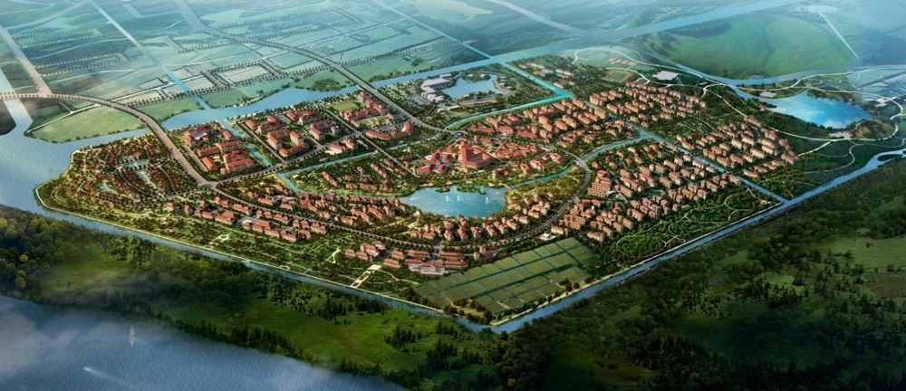
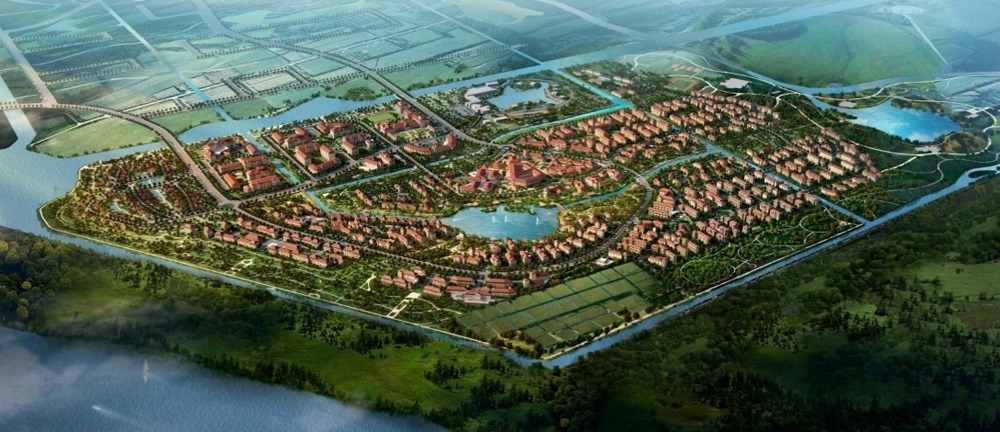

-

上实集团于1981年7月在香港注册成立，是上海市政府全资拥有的综合性企业集团，属上海市国资委出资监管企业。上实集团拥有5家境内外上市公司，形成房地产、医药、基建、消费品、金融投资益大核心产业。目前，上实集团已成为上海在海外规模最大、实力最强的综合性企业集团和香港最具代表性的地方中资企业之一。
上海实业东滩投资开发（集团）有限公司（简称“上实东滩”），是上实集团直属企业之一。上实东滩受上实集团委托，全权负责上海崇明东滩86平方公里的开发与建设。
-
